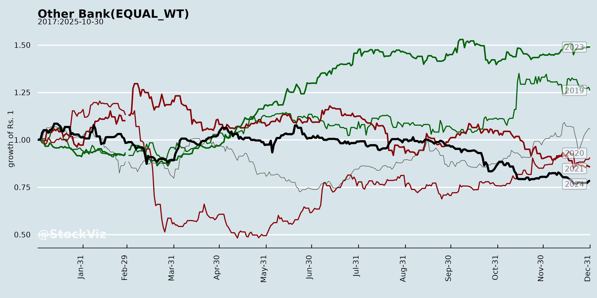
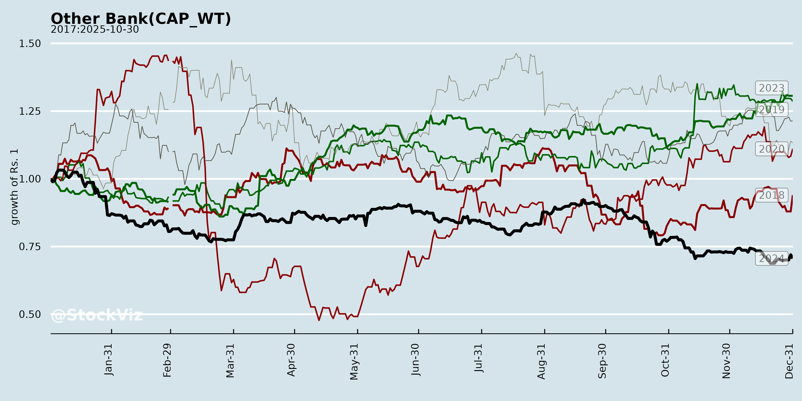
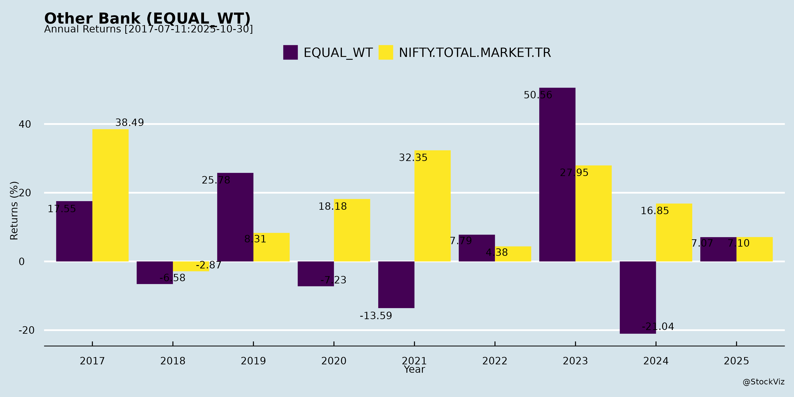
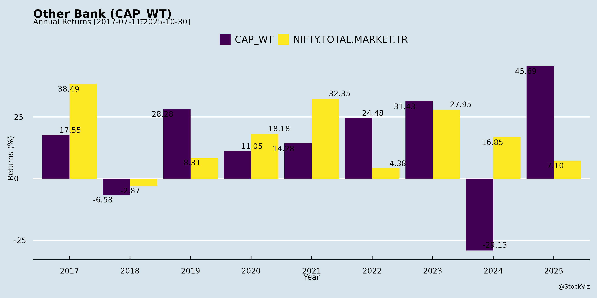
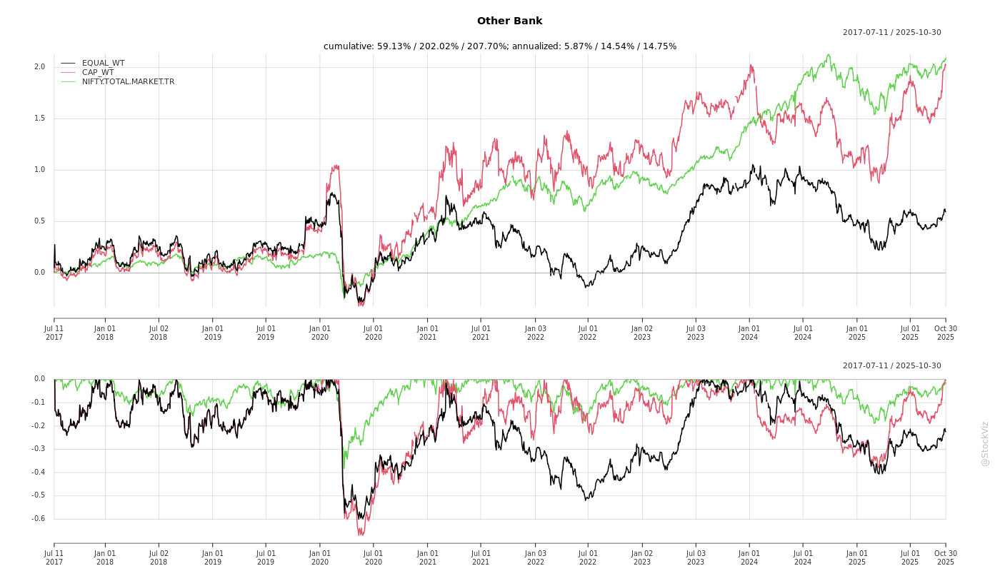
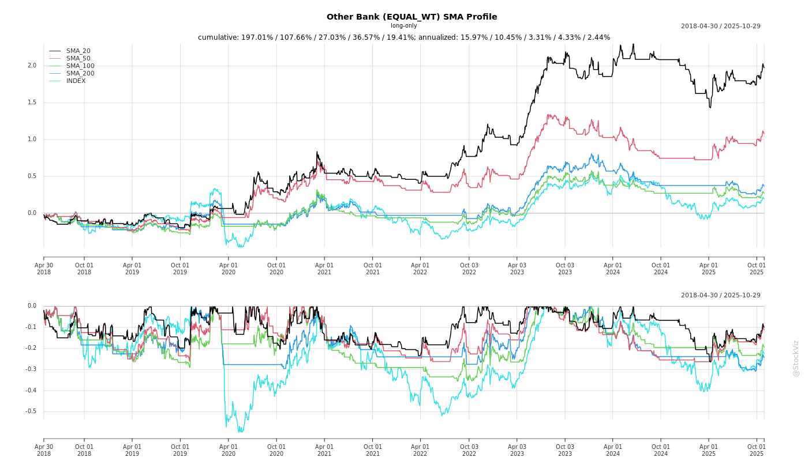

Other Bank
Industry Metrics
February 20, 2026
Annual Returns




Cumulative Returns and Drawdowns

SMA Scenarios

Current Distance from SMA
Rolling Returns


Market Cap
EBIT (% of Industry Total)
Revenue (% of Industry Total)
AI Summaries
Analyst
asof: 2025-12-03
Analysis of Indian Small Finance Banks (SFBs) Based on Provided Documents
The documents primarily cover disclosures and Q2/H1 FY26 earnings transcripts from key SFBs (e.g., Utkarsh, Suryoday, ESAF, Ujjivan, AU, Jana, Equitas) and investor meet schedules for others (e.g., Capital, Fino). These reveal a sector navigating microfinance (MFI/JLG) stress amid diversification. Below is a synthesized analysis of headwinds, tailwinds, growth prospects, and key risks.
Headwinds
- MFI/JLG Portfolio Stress: Regulatory Guardrail 2.0 (effective Apr 2025; max 3 lenders/borrower) caused disbursement slowdowns (e.g., Utkarsh JLG contracted 11% QoQ), elevated slippages (Utkarsh: ₹464cr Q2; Suryoday: ₹170cr MFI Q2; ESAF: ₹255cr micro), and collections at 98-99% (X-bucket). Legacy over-leveraging (e.g., Utkarsh lender+4 at 6%) persists.
- Asset Quality Deterioration: GNPA rose (Utkarsh: peaked stress; Suryoday: 5.9%; ESAF: 8.5%). Credit costs high (Utkarsh: elevated near-term; Suryoday: H1 drag).
- Profitability Pressure: Losses/net profit dips (Utkarsh: ₹348cr Q2 loss; Suryoday: PAT -33% YoY). NIM contraction (ESAF: 5.9%; mix shift to lower-yield secured).
- Opex and Workforce Challenges: High cost-income (Suryoday: 72.9%; ESAF target 60-65%). Attrition in field staff (Utkarsh industry-wide).
- Macro/Regional: Bihar/UP/Karnataka/TN stress (Utkarsh 80% unsecured in these; ESAF TN/Karnataka).
Tailwinds
- Portfolio Diversification: Secured share rising (ESAF: 61% from 39%; Utkarsh: 47%; Suryoday: 55%). Growth in gold (ESAF doubled YoY), MSME/LAP (Utkarsh +33%), housing/CV (Suryoday +39-49%).
- Deposits Momentum: Retail/CASA growth (ESAF: CASA +14% YoY, ratio 26.4%; Suryoday: 86% retail). CD ratios prudent (Utkarsh: 79%).
- Risk Mitigation: CGFMU coverage (Utkarsh incremental JLG/MBBL; Suryoday ₹313cr claim). New book quality better (ESAF: 2% NPA on post-Jun’24 book).
- Collections Improving: X-bucket 98.7-99.5% (Utkarsh Sep’25); SMA flows down (Suryoday <₹35cr/month).
- Digital/Policy Support: UPI credit, digital sourcing (Suryoday ₹1,300cr deposits); RBI repo cuts aiding CoF (ESAF 7.2%).
Growth Prospects
- Loan Book Targets: 20-30% FY26/FY27 (Utkarsh 25%; ESAF 20-25%; Suryoday 30%). Secured to drive (Utkarsh 30-35%, unsecured 15-18%; ESAF 65% secured).
- Disbursement Revival: Doubled YoY in places (ESAF ₹8,913cr Q2). Micro stabilization + secured ramp-up (gold/MSME/vehicles).
- ROA/ROE Trajectory: Positive quarterly ROA FY26 (ESAF Q3/Q4; Suryoday 1.2%; Utkarsh Q3 better). Long-term: 1.5-2% ROA, 15% ROE (Utkarsh FY28).
- Expansion: Branch consolidation/digital (Utkarsh 1,100 branches; ESAF 788+1,110 CSCs). Cross-sell, NTB Vikas loans (Suryoday 70% inclusive mix).
- Capital: Raised (Utkarsh ₹950cr rights); buffers strong (Suryoday CAR 23.4%).
Key Risks
- Legacy MFI Resolution: High PCR needed (Utkarsh MFI 68%; write-offs ₹366cr H1). Prolonged stress could elevate credit costs (target 2-4%).
- Disbursement Normalization Delay: Guardrails limit eligible borrowers (16-61% over-levered in Utkarsh).
- Yield/NIM Compression: Secured mix lowers yields (Suryoday 16.5%; ESAF gold 13.4% incremental 15%).
- Execution/External: Hiring/collections in stressed states; monsoon/GST deferrals (Suryoday CV); no further repo cuts.
- Regulatory: ECL framework draft; ARC sales/write-offs (Utkarsh ₹24cr NBFC).
Summary
Indian SFBs face transitional headwinds from MFI over-leveraging and Guardrail 2.0, leading to loan contractions, high NPAs (5-8.5%), and profitability dips (losses in Utkarsh). However, strong tailwinds from secured diversification (50-65% mix), CGFMU, improving collections (98-99%), and deposit growth position them for recovery. Growth prospects are robust at 20-30% loan books via secured/MSME/gold, targeting positive ROA FY26 and 15-20% ROE medium-term. Key risks center on legacy stress resolution and NIM pressure, but prudent capital/de-risking mitigates them. Overall, FY26 is consolidation year; FY27+ offers resilient 25%+ growth with diversified, lower-cyclical portfolios. Sector resilient, backed by inclusion focus and macro tailwinds (6.8% GDP).
Financial
asof: 2025-12-02
Summary Analysis of Indian Small Finance Banks (SFBs) - Q3 FY25 (Based on Provided Financial Results)
The analysis covers key listed SFBs (AU, Ujjivan, Jana, Utkarsh, Suryoday, ESAF; Capital SFB clarification noted but limited data). Sector shows robust balance sheet growth amid merger integrations (e.g., AU-Fincare) but faces acute asset quality stress, particularly in unsecured/microfinance (MFI) portfolios. Overall, net profits declined YoY for most (except AU, Jana), with provisions surging 2-4x.
Headwinds (Challenges)
- Asset Quality Deterioration: GNPA rose sharply (avg. 4-7%; Utkarsh 6.17%, Suryoday 5.53%, ESAF 6.96%, AU 2.31%). NNPA 0.9-3%. MFI stress explicit (AU: ₹170 Cr contingency; Utkarsh: floating provisions paused; ESAF: high retail slippages).
- Profit Pressure: Q3 losses/profit drops (Utkarsh -₹168 Cr, ESAF -₹210 Cr, Ujjivan down 64% YoY). Provisions/contingencies up 2-5x (AU ₹502 Cr, Jana ₹174 Cr).
- Higher Costs: Operating expenses rose (employee costs 20-30% YoY), NIM compression from rising interest expended (10-20% growth).
- Merger/Transition Impacts: AU results not comparable post-Fincare; others cite investment reclassification (RBI norms from Apr’24) distorting YoY figures.
Tailwinds (Positive Factors)
- Balance Sheet Expansion: Total assets grew 20-40% YoY (AU ₹1.43L Cr, Jana ₹3.5L Cr, ESAF ₹2.67L Cr). Advances/deposits up 25-50% (strong CASA in Ujjivan/Jana).
- Capital Strength: High CAR (18-27%; AU 18%, Ujjivan 24%, Jana 18%). Enables growth without dilution.
- Interest Income Momentum: Up 20-50% YoY (AU ₹4,113 Cr Q3), driven by retail/wholesale lending.
- Regulatory Support: CGFMU guarantees aiding provisions (Suryoday); Basel II exemptions on market/OpRisk.
Growth Prospects
- High: Retail focus (80-90% portfolio; digital sub-segments emerging). Deposits growing faster than advances (CASA 30-40%). AU/Jana post-merger scale (AU assets doubled). Wholesale/Treasury diversification.
- Projections: 20-30% AUM CAGR FY26 if NPA peaks; ROA recovery to 1.5-2% (from current 0-1.2%). Digital Banking Units (DBUs) mandated, boosting efficiency.
- Catalysts: RBI SFB guidelines easing (universal bank path); falling rates aiding NIMs.
Key Risks
| Risk Category | Description | Severity (High/Med/Low) |
|---|---|---|
| Credit Risk | MFI/unsecured slippages (40-60% portfolio); rural slowdown. | High |
| Provisioning/Liquidity | Elevated provisions (20-50% of profits); floating provisions strained. | High |
| Concentration | Retail/MFI heavy (AU/ESAF); BC-model dependency (ESAF exceptional item). | Med-High |
| Regulatory | RBI norms (investments, NPA classification); merger scrutiny. | Med |
| Macro | Monsoon/inflation impacting borrowers; rate volatility. | Med |
| Operational | Employee costs up; tech/digital transition. | Low-Med |
Overall Outlook: Short-term pain from NPA cycle (peak Q4 FY25?), but strong fundamentals support recovery. AU/Jana leaders; Utkarsh/ESAF laggards. Sector ROA ~1% FY25 (down from 1.5-2% FY24); monitor MFI stress. Investors: Favor high-CAR/diversified players.
General
asof: 2025-12-03
Analysis of Indian Small Finance Banks (SFBs): Headwinds, Tailwinds, Growth Prospects, and Key Risks
The provided documents primarily cover announcements from SFBs like AU Small Finance Bank, Ujjivan SFB, Equitas SFB, Jana SFB, Utkarsh SFB (most detailed via Rights Issue Letter of Offer), Fino Payments Bank, Suryoday SFB, ESAF SFB, and Capital SFB. These reflect sector-wide trends in India’s SFB space, characterized by microfinance roots, regulatory oversight (RBI/SEBI), asset quality pressures, and diversification efforts. Utkarsh SFB’s disclosures highlight acute challenges (e.g., NPAs at 11.42% in Q1 FY26, losses), while others show mixed resilience (e.g., Ujjivan’s deposit growth).
Below is a summary analysis structured by key categories:
Headwinds (Key Challenges)
- Deteriorating Asset Quality & High NPAs: Microfinance/JLG loans (core to SFBs) face stress from over-leverage, climate events, post-COVID repayment issues, and MFIN norms (limiting lenders per borrower to 3-4). Utkarsh: GNPA surged to 11.42% (Q1 FY26) from 2.78% (Q1 FY25); credit costs at 8.49%; losses of ₹239 Cr. Regional hotspots: Bihar/UP (13-16% GNPA). Provision coverage ratios dropped (Utkarsh: 59.15%).
- Profitability Squeeze: Sharp profit declines (Utkarsh: PAT ₹23.7 Cr in FY25 vs. ₹497 Cr in FY24; Q1 FY26 loss). NIM compression (5.93% in Q1 FY26), high opex (6.45% of avg. assets), cost-to-income >60%.
- Regulatory & Compliance Pressures: Promoter dilution mandates (to 26% in 15 yrs); RBI rejections (Jana’s universal bank bid); inspections (Utkarsh: gaps in risk mgmt., fraud signals); ongoing mergers/schemes (Utkarsh reverse merger, ESAF revised scheme).
- Sector Shakeout: Microfinance upheaval; unsecured loans >50% portfolio vulnerable; high attrition (Utkarsh: 52% in Q1 FY26).
- Funding & Liquidity: Bulk deposits (25-33%); rising CoF (8.1%); reliance on institutional deposits.
Tailwinds (Positive Factors)
- Deposit Mobilization: Strong growth (Ujjivan: 14.8% YoY to ₹39,101 Cr; Utkarsh: 23% YoY). Retail focus (CASA 19-27%; retail term deposits ~50%).
- Diversification: Shift to secured/NMBL loans (Utkarsh: 52.77% of GLP; growth in housing/MSME/vehicles). Gold loans, wholesale lending expanding.
- Branch/Digital Expansion: Utkarsh: 1,099 outlets (69% micro-banking); digital (UPI, WhatsApp banking, core upgrade to Finacle).
- Regulatory Approvals: RBI nods (Suryoday: 7.14% holding; Utkarsh in-principle listings); ESG ratings (Fino: ‘Very Good’).
- Capital Strength: Above-minimum CRAR (Utkarsh: 19.64%, Tier-1 16.71%); rights issues for Tier-1 augmentation.
Growth Prospects
- Loan Book Expansion: GLP growth (Utkarsh: 7.5% YoY FY25; Ujjivan: 14% YoY). Target: NMBL (secured) to >50%; cross-sell (credit cards, UPI, insurance).
- Geographic/Outlet Growth: Rural/semi-urban focus (25%+ URCs); new branches (Utkarsh: +211 YoY). BC/DSA partnerships for untapped areas.
- Liability Franchise: CASA/RTD build-up (71-74%); digital onboarding (handhelds for 29L+ accounts).
- Fee Income & Diversification: Mutual funds, insurance distribution; wholesale lending; ESOPs (Capital SFB).
- Capital Infusion: Rights issues (Utkarsh: ₹949 Cr); promoter schemes (ESAF). Post-dilution compliance enables scaling.
- Outlook: FY26 potential for 15-20% AUM growth if NPAs stabilize; digital/tech upgrades (Finacle) for efficiency.
Key Risks
- Credit/Asset Quality (High): Microfinance dependency (40-50% GLP); regional concentration (Bihar/UP: 48-75% exposure); potential NPA spikes from waivers/climate/politics.
- Regulatory/Compliance (High): RBI scrutiny (inspections, promoter dilution); universal bank failures (Jana); merger delays (Utkarsh/ESAF).
- Profitability/Liquidity (Medium-High): High credit costs (5-8%); NIM erosion; deposit outflows (bulk 25-33%).
- Operational (Medium): High attrition (35-52%); fraud/theft (Utkarsh: ₹4 Cr losses); cyber risks despite ISO certification.
- Macro/Sector (Medium): Interest rate volatility; competition (banks/MFIs); unsecured loans (55%); shakeout from lending caps.
- Execution (Medium): Rights issue success (Utkarsh undersubscription risk); diversification pace.
Overall Sector Snapshot: SFBs face near-term headwinds from microfinance stress (NPAs, provisions eroding profits), but tailwinds in deposits/digitalization support medium-term growth (10-20% CAGR in AUM/deposits). Utkarsh exemplifies risks (losses, high NPAs), but diversification/capital raises offer upside. Investors should monitor Q2 FY26 earnings for NPA trends/RBI feedback. Sector CRAR buffers (18-23%) provide resilience.
Investor
asof: 2025-12-03
Summary Analysis: Indian Small Finance Banks (SFBs) Sector
Based on recent disclosures (Q2/H1 FY26 earnings transcripts from Utkarsh, Suryoday, and ESAF SFBs; investor meet schedules from AU, Ujjivan, Jana, Equitas, Fino, Capital SFBs), the sector shows resilience amid microfinance stress but strong diversification momentum. Analysis focuses on headwinds, tailwinds, growth prospects, and key risks for SFBs (excluding majors like Utkarsh/AU as “peers”).
Headwinds (Key Challenges)
- Microfinance/JLG Stress: MFIN Guardrail 2.0 (borrower limit: 3 lenders from Apr 2025) led to 11-33% YoY contraction in unsecured books (e.g., Utkarsh JLG down 11% QoQ; ESAF micro down 33% YoY). Elevated delinquencies (X-bucket ~98-99%), slippages (Utkarsh ₹464cr Q2; Suryoday ₹206cr Q2; ESAF ₹340cr), and collections lag due to over-leveraging legacy issues.
- Asset Quality Pressure: GNPA 5.9-8.5% (up YoY); NNPA 3.8% stable but high credit costs (Utkarsh net loss ₹348cr Q2; Suryoday PAT down 33% YoY). Regional hotspots: Bihar/UP (Utkarsh), Karnataka/TN/Kerala (Suryoday/ESAF).
- Profitability Drag: NIM contraction (5.9-8.5%; yield drop 100-320bps due to mix shift); opex/income ratio 70-75%; interest reversal (Utkarsh ₹27cr).
- Operational: High attrition (entry-level), moderated disbursements, slower MFI recovery.
Tailwinds (Positive Drivers)
- Portfolio Diversification: Secured share up sharply (Utkarsh 47%; Suryoday 55%; ESAF 61% from 39% YoY). Gold loans doubled (ESAF), MSME/housing/CV up 21-49% YoY; Vikas/individual loans (Suryoday 70% of IF mix).
- Deposits Strength: 6-35% YoY growth; retail/CASA up (ESAF CASA 26.4%, +180bps; Suryoday 20.7%). Granular base (86-96% retail), CoF down (7.2-7.8%).
- Risk Mitigation: CGFMU coverage (Utkarsh/Suryoday claims ₹313cr received; 72-73% reimbursement); digital underwriting, collections boost (call centers, 1,200 staff).
- Macro Support: RBI repo stability (5.5%), GDP 6.8%, schemes (CGTMSE/CGFMU); green shoots in MFI (new book PAR<2%, collections 99.5%).
Growth Prospects
- Balanced Expansion: 20-30% loan book growth targeted (Utkarsh 25%; Suryoday 30%; ESAF 20-25%), with secured >50-70% mix by FY27. Disbursements up 16-119% YoY (led by gold/MSME/housing; ESAF ₹8.9k cr Q2).
- Yield/NIM Recovery: Steady-state 8-8.5% NIM, 17-18% yields (post-NPA cleanup); CoF cut benefits (25-100bps).
- ROA/ROE Trajectory: Positive quarterly ROA FY26 (Q3/Q4); 1.2-2% ROA, 8-15% ROE by FY28 (Utkarsh/Suryoday). Digital (UPI credit, 50k customers); branch consolidation (1,100+ outlets).
- Sector Tail: Rural/semi-urban penetration (24-27 states); MSME/agri focus amid Viksit Bharat.
Key Risks
- Legacy/Credit Risks: Prolonged MFI stress (PCR 68-74%; write-offs ₹366-430cr); SMA up (4.8%); lender+3/4 exposure (16%/6%).
- Concentration: Geography (Bihar/UP 80% unsecured for some); product (JLG 39-70% mix).
- Execution: Hiring/retention in MFI; deposit competition (bulk reduction); yield compression in secured (12-13% vs. MFI 25%).
- External: Rural slowdown (monsoon/GST deferral); regulatory (ECL norms); equity dilution (₹950cr-1k cr rights issues).
- Macro: No further repo cuts; political schemes (e.g., Bihar ₹10k women aid neutral).
Overall Outlook: FY26 transitional (consolidation, 10-20% growth); H2 recovery via secured ramp-up, MFI stabilization. Long-term positive (diversified, resilient franchise) but near-term volatility from NPA resolution. Sector ROE ~15% by FY28 feasible with discipline.
Meeting
asof: 2025-12-02
Summary Analysis of Indian Small Finance Banks (SFBs)
The provided documents cover regulatory filings, postal ballots, financial results (Q2/H1FY26), and investor presentations from 8 prominent SFBs (AU, Equitas, Jana, Utkarsh, Fino Payments, Suryoday, ESAF, Capital). These reveal a sector characterized by resilient growth amid microfinance stress, with a shift toward secured lending and digitalization. Below is a structured analysis of headwinds, tailwinds, growth prospects, and key risks, based on common themes across banks (e.g., advances/deposits growth ~15-20% YoY, GNPA 2-12%, NIM ~4%).
Tailwinds (Positive Drivers)
- Robust Deposit Mobilization: Consistent YoY growth (15-20%; e.g., Capital 18%, Suryoday 20%, AU post-merger surge). High CASA ratios (30-35%; e.g., Capital 34%) and retail focus (80-90% granular deposits) support low-cost funding (CoD ~5.9%).
- Secured & Diversified Portfolio Shift: Emphasis on mortgages, MSME, agri loans (60-80% secured; e.g., Capital 78% collateralized). Reduced MFI reliance (10-20%; e.g., Equitas down from 53%).
- Digital & Operational Efficiency: Investments in apps (e.g., Equitas 2.0, AU UPI), CRM, and branch expansion (e.g., Capital 199 branches, Suryoday targeting 300+). Cost-to-income improving (60-65%).
- Strong Capital Position: CRAR 20-25% (well above 15% RBI norm; e.g., AU 23.4%, Capital 24.2%). Equity raises (e.g., Utkarsh rights issue) bolster buffers.
- Fee Income & Cross-Sell: Non-interest income stable (10-15% of total; e.g., Capital ~9%), from bancassurance, forex.
Headwinds (Challenges)
- Asset Quality Stress: Elevated GNPA (2-12%; e.g., Utkarsh 12.4%, Equitas MFI stress at 10%). Slippages in unsecured/MFI amid over-leveraging, floods (e.g., Capital), state interventions (Karnataka/TN).
- NIM Pressure: Compression to ~4% (e.g., Capital 4.0% vs. 4.2% prior) from rate cuts, high CoF, rebalancing (e.g., Equitas microfinance contraction).
- High Provisions/Credit Costs: Elevated (0.2-1%; e.g., Utkarsh net loss ₹59cr). PCR 60-70%, but stress provisioning impacts PAT (e.g., Equitas PAT ₹147cr vs. prior growth).
- Slow Loan Growth: Moderated to 10-12% YoY in stressed segments (e.g., Equitas 11%, Utkarsh contraction in MFI).
- Opex Rise: Employee costs up (e.g., Suryoday 24% YoY), cost-income ~62%.
Growth Prospects (Medium-Term Outlook)
- Balanced Expansion: Advances targeting 15-20% CAGR (e.g., Capital 2x to ₹16k cr by FY29; Suryoday ₹16k cr). Deposits to fuel CD ratio rise (80-85%).
- Product/Geography Diversification: Secured MSME/agri/mortgages (e.g., AU post-Fincare merger; Capital UP/Gujarat entry). Branch-led model (200-300 branches).
- Universal Bank Aspirations: In-principle approvals (e.g., AU), potential for scale.
- Profitability Leverage: RoA 1.2-1.4% (target 1.6%+; e.g., Capital), RoE 10-15%. NIM expansion via CD ratio, lower CoD.
- Digital/Partnerships: UPI, bancassurance, co-lending for fee growth (10-15% of income).
Projected FY29 (Select Banks): Advances ₹15-20k cr, RoA 1.5-2%, RoE 15%+ (assuming stress eases).
Key Risks
- Asset Quality Deterioration: MFI/unsecured stress (10%+ sector NPAs); floods/economic slowdown could spike slippages (e.g., Equitas warns of Q1FY26 loss).
- Regulatory Tightening: RBI norms on unsecured lending, credit growth caps (e.g., Equitas slowdown to 18-20%).
- Interest Rate Volatility: NIM squeeze if rates fall further; liquidity pressures.
- Competition/Execution: Branch scaling, digital adoption in rural areas; over-dependence on North India (e.g., Capital 82% Punjab).
- Macro/External: Monsoon risks, rural slowdown, geopolitical tensions (global growth ~3.3%).
Overall Sector Summary
SFBs exhibit strong fundamentals (capital buffers, deposit growth) but face short-term MFI headwinds (high NPAs, provisions leading to muted PAT ~6% YoY). Tailwinds from diversification/secured shift position for 15-20% growth FY26+, with RoA/RoE recovery post-stress. Manageable risks if RBI eases norms; monitor Q3FY26 for MFI recovery. AU/Capital outperform on stability; Utkarsh/Equitas lag on quality. Recommendation: Positive long-term (buy/hold diversified SFBs), cautious near-term.
Press Release
asof: 2025-11-29
Summary Analysis of Indian Small Finance Banks (SFBs) Sector
Based on Q2/H1 FY26 Results from AU SFB, Ujjivan SFB, Jana SFB, Utkarsh SFB, Suryoday SFB, ESAF SFB, Capital SFB (and others like Fino Payments Bank, Equitas SFB announcement).
The SFB sector demonstrated resilience amid macroeconomic headwinds, with aggregate deposit growth of ~15-35% YoY across peers (led by granular retail/CASA focus) and a strategic pivot to secured lending (e.g., gold, MSME, housing). However, asset quality stress in unsecured/MFI segments led to elevated provisions, NIM compression, and patchy profitability (PAT growth/mixed losses). AU SFB led with robust metrics (21% deposits YoY, 1.4% RoA), while Utkarsh/ESAF/Suryoday reported losses. Overall, balance sheets expanded ~15-20% YoY, but RoA/RoE moderated to 1-1.4%/7-13%.
Headwinds (Key Challenges)
- Asset Quality Deterioration: GNPA rose sector-wide (AU: 2.41%; Jana: 2.8%; Ujjivan: 2.45%; Suryoday: 5.9%; Utkarsh: 12.4%; ESAF stable at ~3.8% NNPA). Slippages in MFI/credit cards/unsecured loans (AU unsecured de-growth 23%; Jana 7%; Utkarsh JLG contraction). Credit costs elevated (AU: up 29% YoY; Jana: ₹222 Cr accelerated provisions).
- NIM Compression: Loan yields down 19-30 bps (repo repricing, mix shift); CoF mixed (AU down 25 bps QoQ but yields fell). Sector NIM ~5-7% (AU 5.5%; Jana 6.6%; Suryoday down 276 bps YoY).
- Macro/Operating Pressures: Global trade/tariffs, GST cuts delaying spends, repo/CRR cuts slowing transmission. High opex (11-17% YoY rise) from branch expansion/manpower.
- Unsecured Portfolio Stress: De-growth/contraction (AU 17% overall GLP YoY incl. unsecured; Ujjivan micro banking stabilizing but slow).
Tailwinds (Positive Drivers)
- Strong Deposit Mobilization: 15-35% YoY growth (AU: 21%, ₹1.33 Lac Cr; Jana: 31%, >₹30k Cr; Suryoday: 35%; Capital: 20%; ESAF: 6%). CASA up 13-22% (Ujjivan 27.5%; ESAF 26.4%; Capital 33.9%), retail share >80-96%. Stable deposits ~70-79% of book.
- Secured Lending Momentum: Shift reducing risk (Ujjivan: 47% share, 53% YoY; Jana: 73%, 34% YoY; ESAF: 82% disbursements, gold doubled; Capital: mortgage/MSME). CD ratios healthy (81-91%, down QoQ).
- Regulatory/Policy Support: RBI repo/CRR cuts, RWA relief for MSME/housing, ECL staggered, CGTMSE/CGMFU guarantees (Suryoday: ₹378 Cr receivable). AU’s universal bank approval boosts sentiment.
- Operational Scale: Branch/touchpoint additions (AU: 2,626; Ujjivan: 766; Jana: 814). Digital/UPI growth (Fino: 33% YoY UPI txns; partnerships for cards/insurance).
Growth Prospects (Opportunities Ahead)
- Balanced Expansion (15-25% YoY Projected): Deposits to outpace loans (system 2x); secured/MSME/housing to drive 20%+ advances (AU ex-unsecured 22%; Ujjivan 14% GLP). Rural revival via monsoons/GST cuts/capex.
- Profitability Recovery: NIM stabilization (CoF cuts expected); slippages down QoQ (AU 12%; Ujjivan SMA 2%). H1 PAT growth (AU 6%; Capital 5%); RoA/RoE ~1.4%/12-13% sustainable with provisions peaking.
- Franchise Strengthening: Customer base >1-12 Cr (AU 120L+); digital (UPI NRE, WhatsApp); partnerships (Zaggle/SBI Life). Universal bank transitions (AU) and tech (Utkarsh 2.0) for scale.
- Sector Tailwinds: Festive/rural demand, forex/MF distribution for CASA; 20% FY26 advances guidance (Ujjivan).
Key Risks (Potential Threats)
| Risk Category | Details | Mitigants |
|---|---|---|
| Credit/Asset Quality | MFI/unsecured stress (slippages ₹908 Cr AU); GNPA 2-12%; PCR 37-84% (Suryoday low 37%). | Secured shift, CGTMSE, collections >98% bucket-X. |
| Profitability | Provisions up 29-55% YoY; opex rise; treasury volatility (AU ₹221 Cr drop). Losses in Utkarsh/ESAF/Suryoday. | NIM/CoF improvement; PPoP growth (AU 21% H1). |
| Liquidity/Funding | LCR dip (AU 119%); CD 78-91%; borrowings up. | Granular deposits (79% stable); CAR 17-24%. |
| Macro/Regulatory | Rate cuts, ECL norms, DICGC premiums; rural/MFI cycles. | Policy easing (RWA cuts); diversification. |
| Execution | Branch ramp-up costs; competition from universal banks. | Tech/digital focus; governance additions (AU board). |
Overall Outlook: SFBs are in a transition phase—de-risking via secured assets/deposits supports long-term growth (15-20% FY26), but near-term profitability pressured by provisions (credit costs 0.6-2.8%). Strong capital (CAR >20%) and retail franchise provide buffers. Positive macro (consumption revival) could lift RoA to 1.5-2% by FY27, with leaders like AU/Ujjivan outperforming. Monitor MFI recovery and NIM trajectory.
Copyright © 2023 SAS Data Analytics Pvt. Ltd. All rights reserved.